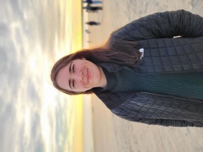

Hope is from Dacula, Georgia and graduated from Buford High School in 2016. She pursued a degree in biomedical engineering from Georgia Tech and graduated with a BSc in 2020. She currently lives in Decatur, Georgia and is a 2nd Year PhD student in biomedical informatics (CSI) at Emory University.

Email: hmumme@emory.edu
LinkedIn: Hope Mumme
Github: hmumme